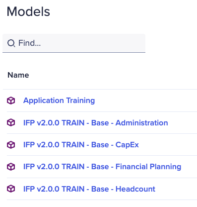
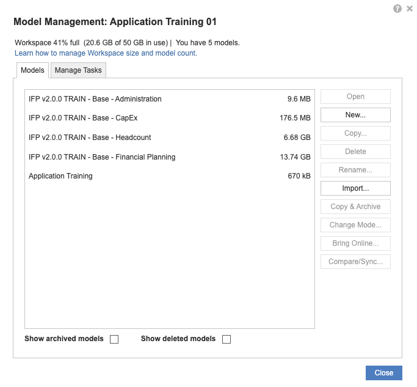
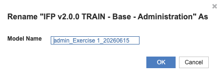

Exercise 1: OpEx and Headcount Planning
Configure your first IFP application for a manufacturing company
What you'll do
- Apply the standardized naming convention so every generated model has a unique name in your tenant
- Configure the eight standard dimensions for an OpEx + headcount scope
- Answer the top-level, Financial Planning, and Headcount configuration questions
- Internalize the six rules that keep your configuration generation-ready
The scenario
A manufacturing company needs to plan operating expenses and headcount across multiple departments and cost centers. No revenue, COGS, balance sheet, or capital expenditure are required in this configuration. You'll set up just enough to support OpEx and headcount planning — the rest of the surface area (CapEx, Revenue, Balance Sheet) comes in later exercises.
Before you start: the six rules
These rules make the difference between a configuration that generates cleanly and one that fails halfway through. Read them once now, then refer back as you work.
- Use a standardized naming convention for every model and app — duplicate names in the tenant cause generation to fail
- Renames must be no longer than the original dimension name, especially "Department"
- All standard dimensions are composite hierarchies. Flat custom lists are handled in the extension layer
- Minimum 2 levels per dimension, maximum 15
- When modifying hierarchy levels, add or remove from the middle — never from the leaf
- Click Apply Changes after every modification. If you need to start over, use Restore default
Step 1 — Rename every model with the standardized naming convention
Before you touch any dimension, give every model a unique name. The names below use today's date so each run is unique in the shared training tenant — type each one exactly as shown.
- From the Workspace, select View All Models.

The Models pane open, listing the IFP v2.0.0 TRAIN models you'll rename. - Select Manage models .

The Model Management dialog open, with the model list on the left and the Rename button on the right. - Select IFP v2.0.0 TRAIN - Base - Administration, click Rename, enter
admin_Exercise 1_YYYYMMDDin the Model Name field, and click OK.
The Rename dialog with the new name typed in — repeat the same flow for each remaining model. - Select IFP v2.0.0 TRAIN - Base - CapEx, click Rename, enter
capex_Exercise 1_YYYYMMDD, and click OK. - Select IFP v2.0.0 TRAIN - Base - Headcount, click Rename, enter
headcount_Exercise 1_YYYYMMDD, and click OK. - Select IFP v2.0.0 TRAIN - Base - Financial Planning, click Rename, enter
fp_Exercise 1_YYYYMMDD, and click OK. - Select Application Training, click Rename, enter
ifp-app_Exercise 1_YYYYMMDD, and click OK. - Click Close to exit the Model Management dialog.
Once all five renames are saved in your tenant, run the check below. It calls the Anaplan API to confirm each model now follows the standardized naming pattern.
All five renames look good.
- Admin model →
admin_Exercise 1_YYYYMMDD - CapEx model →
capex_Exercise 1_YYYYMMDD - Headcount model →
headcount_Exercise 1_YYYYMMDD - Financial Planning model →
fp_Exercise 1_YYYYMMDD - Application Training →
ifp-app_Exercise 1_YYYYMMDD
Each name matches the [ModelType]_Exercise 1_YYYYMMDD pattern. You're cleared to move on to Step 2.
Why must every generated model and app have a unique name within the tenant?
[ModelType]_Exercise ##_YYYYMMDD keeps every run unique even when the same exercise is repeated.[ModelType]_Exercise ##_YYYYMMDD guarantees a unique name even when the same exercise is run repeatedly.Step 2 — Configure the eight standard dimensions
IFP ships with eight standard dimensions. Mark the ones this scenario needs, rename four of them, and set the right number of hierarchy levels for each. Click Apply Changes after each dimension before moving to the next.
- In the Configurator, open the Dimensions section.
- For Entity, keep it required, leave the name as-is, and set # of levels to
2. Click Apply Changes. - For Department, keep it required, rename it to
CostCenter, and set # of levels to3. Click Apply Changes. - For Product, mark it not required. Click Apply Changes.
- For Job, keep it required, rename it to
Roles, and set # of levels to3. Click Apply Changes. - For Vendor, keep it required, rename it to
Suppliers, and set # of levels to2. Click Apply Changes. - For Functional Area, keep it required, rename it to
HR Org, and set # of levels to3. Click Apply Changes. - For Customer, mark it not required. Click Apply Changes.
- For Location, mark it not required. Click Apply Changes.
This scenario also needs two custom lists handled in the extension layer (not in the Configurator).
- Open the Custom Lists section. Add
Projectsas a flat list — you'll use it for project tracking in the extension exercise. - Add
Countryas a flat list — it's a supporting attribute list for later use.
Your client needs to track spend by project code. How do you handle "Project" in this exercise?
Step 3 — Answer the top-level configuration questions
The Configurator asks a handful of orientation questions before drilling into each model.
- Open the Top-Level Questions section in the Configurator.
Set each answer below.
Multi-currency support?
YesMulti-entity reporting requires it.
Use the Location dimension?
NoNot required by this scenario.
Use the Functional Area dimension?
YesRepurposed as "HR Org" — you renamed it in Step 2.
- Click Apply Changes once all three answers are set.
Step 4 — Answer the Financial Planning questions
The Financial Planning model is the OpEx engine for this scenario. Pay attention to Margin Planning → Expense Only — that's what scopes the model to OpEx and skips revenue.
- Open the Financial Planning section in the Configurator.
Set each answer below.
Multi-currency support?
YesTop-down targets?
NoMargin Planning?
Expense OnlyScopes the model to OpEx — skips revenue, COGS, and balance-sheet planning.
Expense planning?
YesDimensionality for expense planning
Department, VendorDimensionality for itemized expense planning
DepartmentExpense allocations?
No- Click Apply Changes once all seven answers are set.
Step 5 — Answer the Headcount questions
The Headcount model handles workforce planning.
- Open the Headcount section in the Configurator.
Set each answer below.
Multi-currency support?
YesTerm for Job?
RolesMust match the rename you applied to the Job dimension in Step 2.
- Click Apply Changes once both answers are set.
Why did you set Margin Planning to Expense Only in this exercise?
Expense Only is right when the client only needs OpEx — it strips out the revenue and balance-sheet pieces so generation only builds what you'll actually use. Exercise 2 will widen the scope.Expense Only matches a client who needs OpEx but not revenue, COGS, or balance-sheet planning. There's no universal default; the scenario dictates the answer.You're done with the configuration
You've now set up a complete OpEx + headcount configuration. You haven't generated the model yet — that comes in Model Generation. For now, leave the Configurator alone and head to Exercise 2, which widens the scenario to include revenue and CapEx.
- A future Application Framework update will make configuration question terminology adapt to any dimension renames you've made.
- An additional update will allow a 1-click "Restore defaults" for all settings.